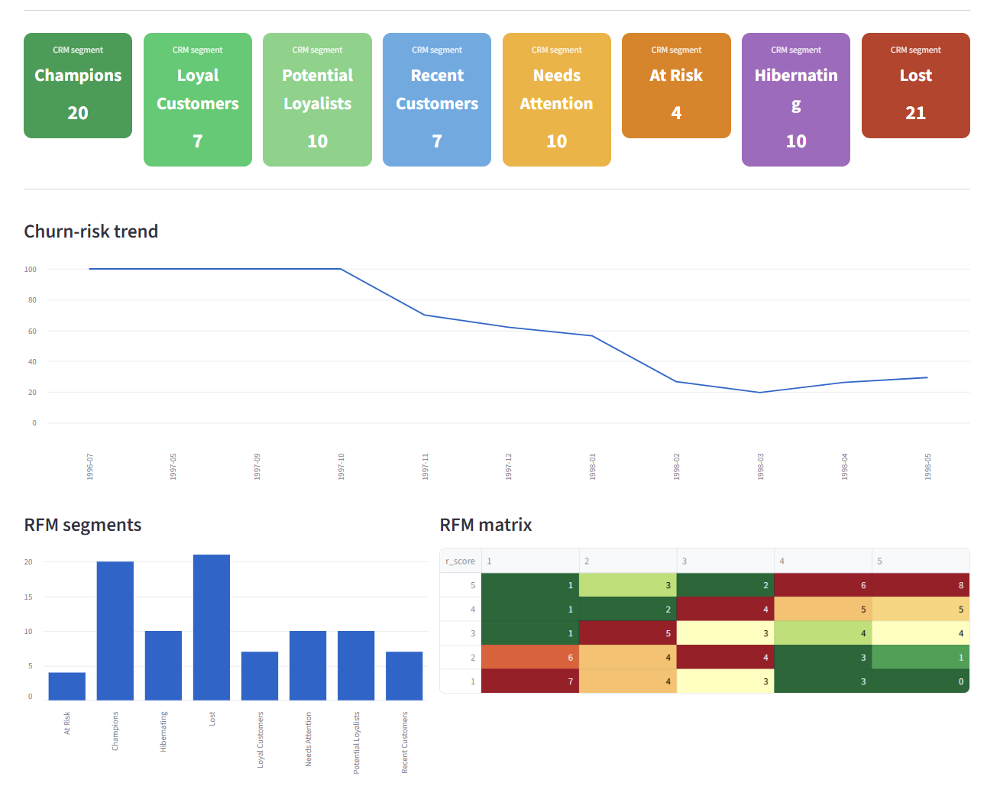
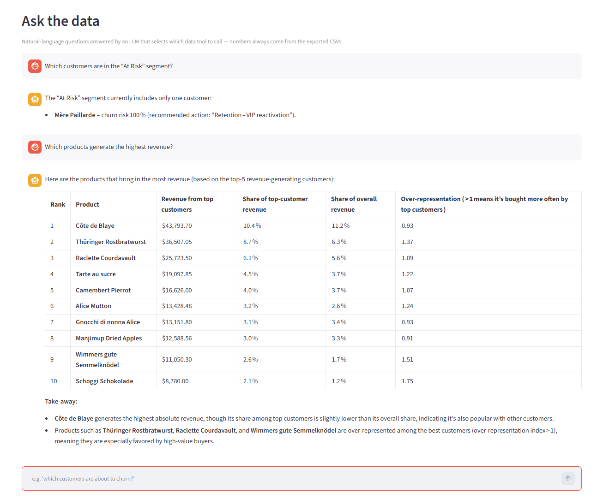
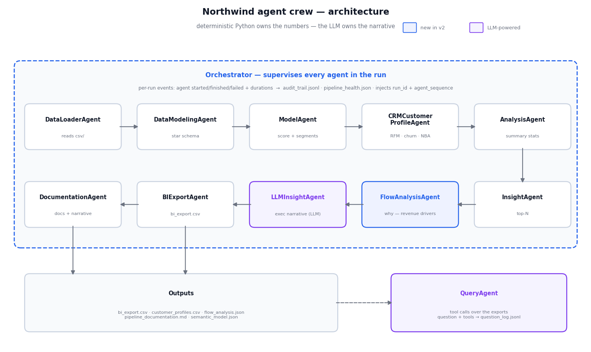

Explore the CRM output — live in your browser
These charts are built from the actual pipeline output (output/customer_profiles.csv, output/bi_export.csv). Hover, zoom and click the legends.
Ask the data — try it yourself
Interactive demo. The real app uses an LLM to parse your question and pick a tool — this demo runs the same tools on the same exported data, but parses with keyword matching instead. If it can't parse your question it says so. Just like the real agent, it never invents numbers.
What it looks like

The Streamlit CRM dashboard — RFM segments, churn-risk trend and the RFM matrix.

"Ask the data" — the tool-using LLM agent answering questions in plain English.
The agent crew
Sequential pipeline — most steps are deterministic Python stages; strictly speaking only the LLM-marked steps are agentic (the narrative writer and the tool-calling query agent). The agent naming keeps every stage inspectable, logged and swappable.

| Agent | Responsibility |
|---|---|
DataLoaderAgent | Reads CSV files from csv/ |
DataModelingAgent | Identifies fact/dimension tables, builds the star schema |
ModelAgent | Enriches rows with _score and sales_amount |
CRMCustomerProfileAgent | RFM segmentation, churn-risk scoring, next-best-action |
AnalysisAgent | Statistics over score and sales |
InsightAgent | Top-N products/customers/countries |
FlowAnalysisAgent | Decomposes the revenue change between period halves into drivers per dimension |
LLMInsightAgent | LLM-written executive summary, insights, recommendations |
BIExportAgent | Writes the BI-ready CSV to output/ |
DocumentationAgent | Generates pipeline_documentation.md incl. AI narrative |
Orchestration & observability
An Orchestrator supervises the crew rather than sitting inside it. Every run appends
per-agent events (start/finish/fail, durations, output keys) to audit_trail.jsonl, writes a
pipeline_health.json manifest, and the query agent logs each question plus chosen tools to
question_log.jsonl — a meta log of what the data gets asked. The dashboard surfaces all of it in a
"Why did revenue change?" and a "Pipeline health" section.
Design principle
Deterministic code owns the numbers; the model owns interpretation and dialogue. The LLM selects tools and phrases answers — it can never invent a metric. Without an API key the pipeline still runs end-to-end and falls back to a template narrative.
Code: run_agent_crew.py (pipeline), ask.py (query CLI), agents/streamlit_app.py (dashboard), agents/orchestrator.py (audit + health), output/semantic_model.json (lightweight semantic layer).